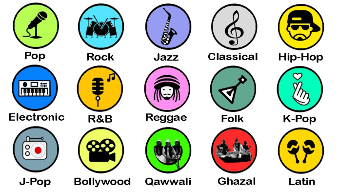

Explore Music Genres

Explore different music genres like Pop, Rock, Hip-Hop, Country and Folk music.
Irish Artists - Spotify Streams
| Artist | Song | Spotify Streams |
|---|---|---|
| The Script | Breakeven | 1,459,069,009 |
| U2 | With or Without You | 1,495,357,629 |
| The Cranberries | Zombie | 1,857,066,260 |
Spotify stream figures checked August 2026.
Top Genres
- Pop
- Rock
- Hip-Hop
- Country
- Folk
| Genre | Origin |
|---|---|
| Pop | Worldwide |
| Rock | USA |
| Hip-Hop | USA |
Pop
Pop music is one of the most popular genres worldwide. It focuses on catchy melodies, simple lyrics and mass appeal.
Rock
Rock music is characterised by strong beats, electric guitars and energetic performances.
Hip-Hop
Hip-hop combines rhythmic music with rapping, DJing and beatboxing.
Country
Country music often tells stories about life, love and hardship.
Folk
Folk music is rooted in tradition and focuses on storytelling and heritage.